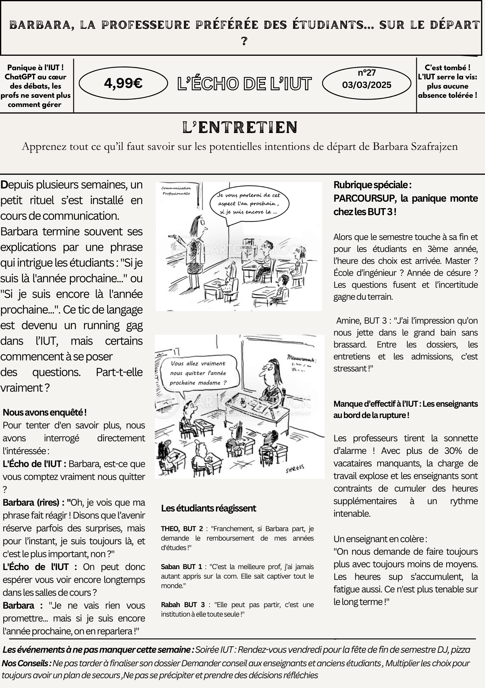
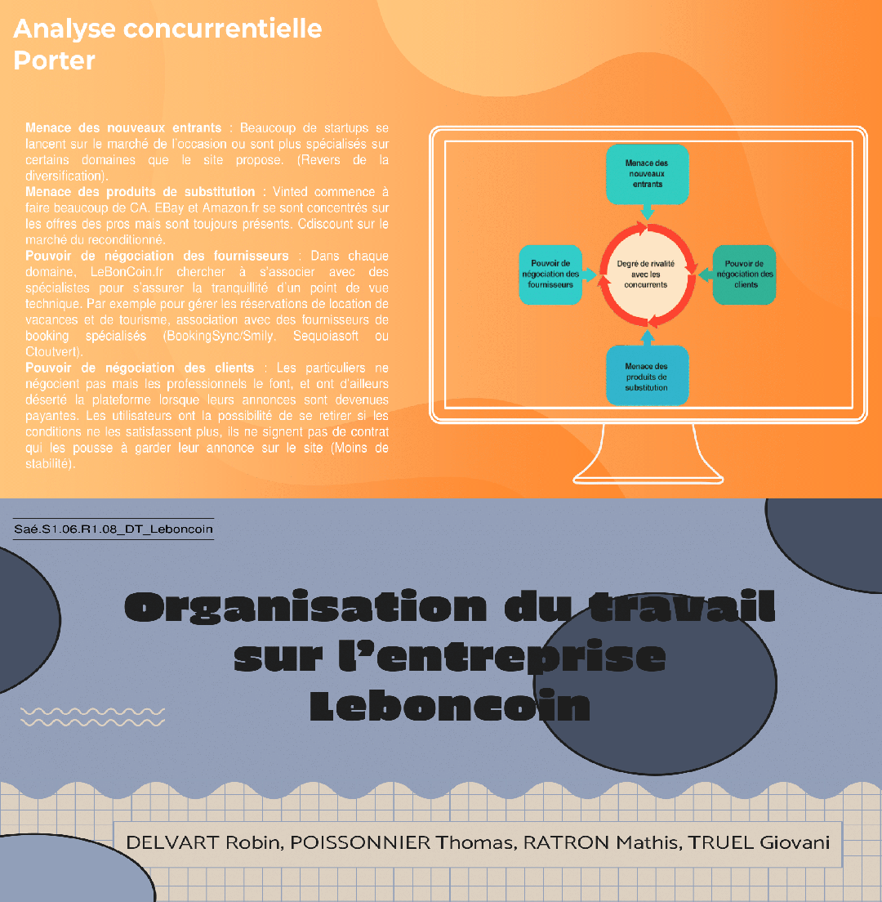
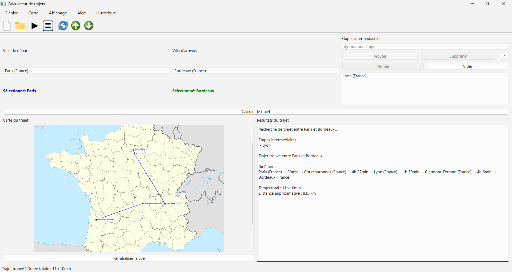
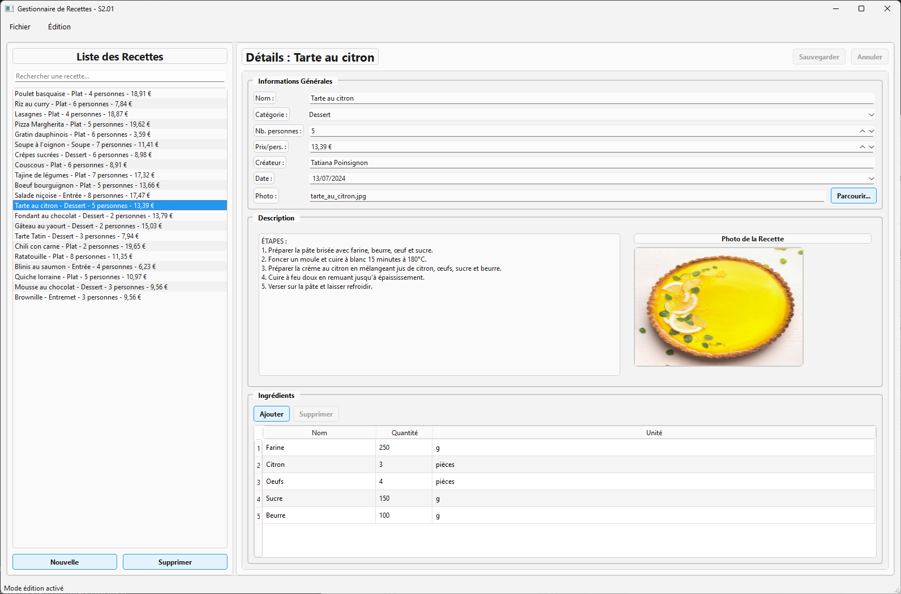
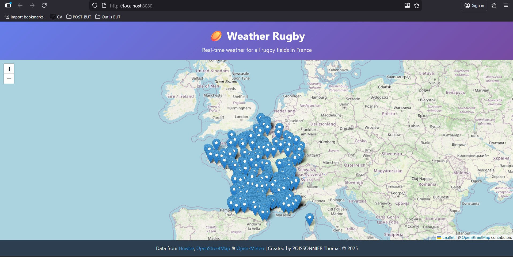
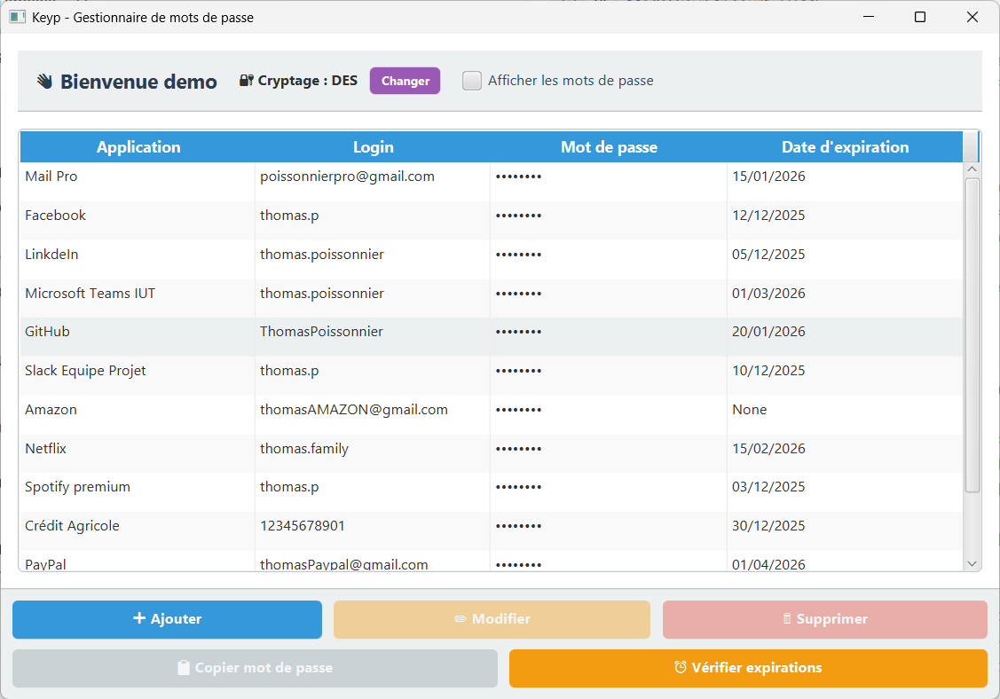

Projets


Recueil de Compétences

Une de Journal
Illustration du concept de référentiel culturel commun
Communication
Design graphique
Rédaction
Étude comparative d'algorithmes
Comparaison qualitative d'algorithmes de tri
C++
Algorithmique
Analyse de performance

Analyse Organisationnelle d'une Entreprise
Analyse de l'organisation et du fonctionnement de LeBonCoin
Économie du numérique
Communication
Gestion d'un SI

Calculateur de trajet
Application de calcul d'itinéraires optimisés
C++
Qt
Dijkstra
Base de données
Cahier des charges
Réalisation d'un cahier des charges complet pour une application factice
Documentation de projet
Travail d'équipe
Réalisation d'application

Bibliothèque de recettes
Application de gestion de recettes culinaires
C++
Qt
Interface graphique

Weather Rugby
Application web affichant les terrains de rugby de France avec leur météo
HTML/CSS/JavaScript
BDD

Keyp
Gestionnaire de mots de passe sécurisé — cryptographie AES/DES/Blowfish, architecture MVC + Design Patterns
Java
JavaFX
AES / DES / Blowfish
MVC
Design Patterns